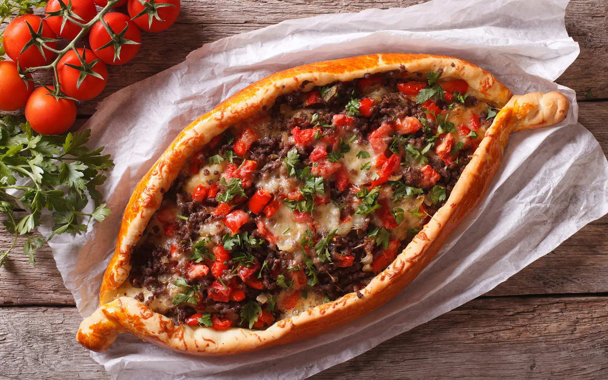
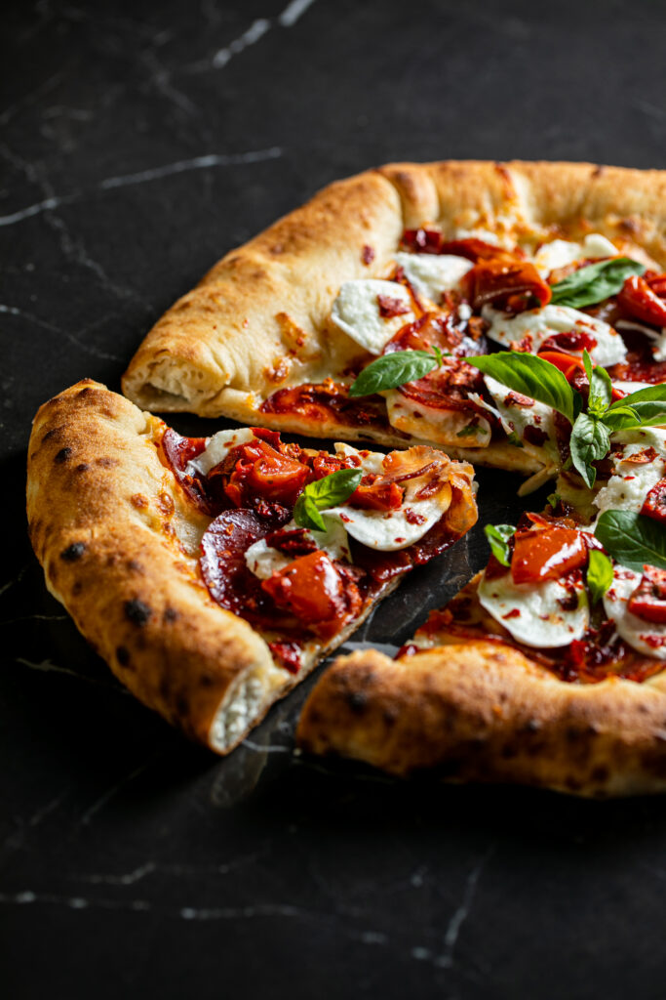
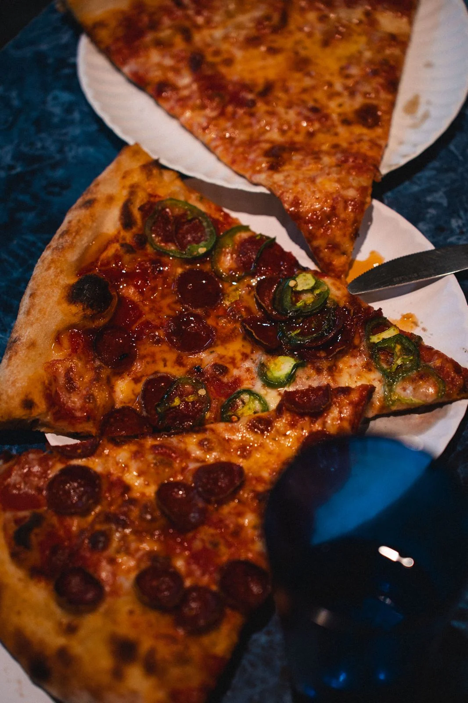
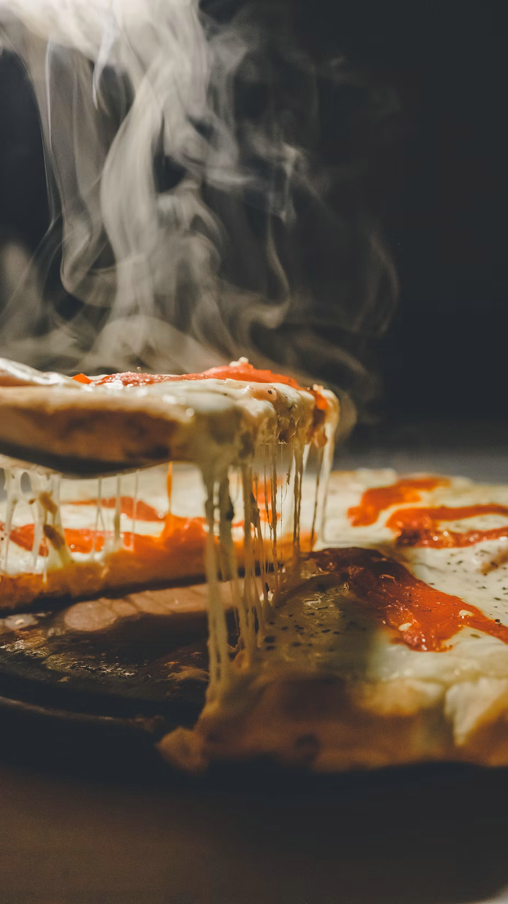

Gallery




Our restaurant offers a unique culinary experience featuring dishes from all over the world. Book now to enjoy our delicious specialties!
Order your favorite pizza straight to your door! Choose from a wide selection of fresh, tasty ingredients, and get your hot, delicious pizza in minutes!
Born from a passion for authentic flavors and a desire to bring the world to your table. You can find us at Via Santa Teresa degli Scalzi 70, in the heart of Boccadifalco, Palermo — a neighborhood spot where hospitality feels like home and every pizza tells a story. Our kitchen combines the Neapolitan pizza tradition with fresh ingredients and influences from every corner of the globe. Because we believe that food is the universal language that brings people, cultures, and traditions together. Every dough is handcrafted, every ingredient is chosen with care. Whether you visit us to dine in or prefer ordering home delivery, we want every bite to be an experience worth remembering.




"The best pizza I have ever eaten! Fresh ingredients and authentic flavors. Highly recommended!" - Maria R.
"A unique culinary experience! The variety of pizzas is incredible, and every bite is an explosion of flavor." - Luca B.
"The service is excellent and the atmosphere is welcoming. The pizza is simply delicious!" - Sofia M.
"A true paradise for pizza lovers! I can't wait to return and try more delicacies from the menu." - Marco T.